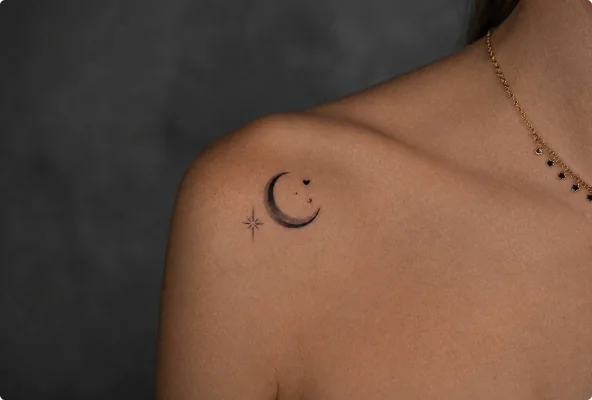

Символы
Значение татуировки «Луна»
Луна связана с циклами, переменами, интуицией и скрытой стороной внутреннего мира.
Её постоянная смена фаз сделала луну естественным символом времени, обновления и повторяющихся жизненных циклов. Такая татуировка может напоминать, что состояния меняются и за завершением одного периода приходит другой.
Во многих культурах луну связывали с ночью, тайной, женскими образами, природными ритмами и интуицией. В современном прочтении она часто означает чувствительность, самостоятельность или интерес к внутреннему миру.
Полумесяц, полная луна, фазы луны или сочетание со звёздами дают разные визуальные акценты и помогают сделать значение более индивидуальным.
Значение татуировки не бывает единственно правильным: один и тот же символ может восприниматься по-разному в зависимости от культуры, композиции и вашей личной истории.
Обсудить татуировку